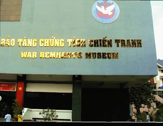

Akiko Takenaka, “Museumification of Memories: Collecting Testimonials and Objects of Wars in Asia”
Akiko Takenaka is an assistant professor in the Department of History at the University of Kentucky. She specializes in social and cultural history of modern Japan with research focus on memory and historiography of the Asia-Pacific War. Trained as an architect and an architectural historian, she is particularly interested in the intersection between memory and space, and has examined a variety of memorial spaces broadly conceived, including memorials, museums and urban spaces, as well as virtual spaces of memory. She is the author of a number of articles that investigate the relationship between war memory and visual culture. Her book manuscript entitled Memory and Spatial Practice: Yasukuni Shrine and Japan’s Unending Postwar will be published as a Study of the Weatherhead East Asia Institute. The work examines Yasukuni Shrine as a physical space, object of visual and spatial representation, and site of spatial practice in order to highlight the complexity of Yasukuni’s past and critique the official narratives that postwar debates have responded to. She is currently working on a book manuscript entitled War, Trauma and Postwar in Japan and East Asia in which she investigates the effect of trauma on war, as well as the influence of such representations on international relations in Japan. She has received her Ph.D. in Art History from Yale University (2004), and a MS in the History, Theory and Criticism of Architecture and Art from MIT (1997).
Akiko Takenaka

Saturday, September 28, 2013
Akiko Takenaka, “Museumification of Memories: Collecting Testimonials and Objects of Wars in Asia”
What are the motives behind the collections in museums dedicated to wars in Asia? In my paper, I analyze the collecting of war memories in Japanese museums using theories of memory and trauma, and with references to selected museums in Asia including the Nanjing Massacre Memorial Museum (Nanjing, China), and the War Remnants Museum (Hanoi, Vietnam). While collections in all the museums examined focus on suffering and victimhood for the purpose of demonstrating the injustices inflicted on their people during war to audiences both domestic and international, I suggest that the Japanese examples are often driven by additional motives. Most Japanese museums dedicated to the Asia-Pacific War (1931-45) regularly call out to the public for both tangible and ephemeral memories of the war in the form of objects, documents, photographs, and testimonies. Most collected material, however, have no clear role in the museum. In many museums, objects and documents are haphazardly piled up in dusty basement rooms; others rent storage spaces to house the overflowing material. Yet, they continue their requests. Various websites similarly solicit written narratives of the war experience. This near compulsive drive to collect reflects the archival nature of modern memory that Pierre Nora points out in his discussion of lieux de mémoire. The passage of time since the end of the war certainly necessitates the preservation of memory through archival means. But in the case of Japan, motives for collecting also have strong connections to overcoming of trauma—of the war experience itself, and also of what I argue is the traumatic nature of the postwar condition itself that is precipitated by issues associated with the inadequate and inconclusive state of war reparation by Japan. Almost all that are engaged in such collecting work in Japan today have never experienced the war. But they have grown up in a society that has always identified itself through references to it—whether by encounters with memories of suffering and defeat, or the need to deal with issues of war responsibility. As such, they experience the war through what Marianne Hirsch has referred to as “postmemory”—a memory without experience that is inherited through the environment in which one grows up. Postmemory of a traumatic event such as war has a persistent effect on the succeeding generations because, for them, even the act of mourning is secondary: the loss can never be incorporated and mourning can never be overcome. The postmemory generation collects war memories as if they were recovering what was lost, with hopes that, through collecting and coming to terms with those events that had occurred long before they were born, they will be able to overcome their inherited trauma. Japanese peace museums are one such site of collection. But since the process of collection coincides with the process of mourning, it cannot end for most people. This process of acting out (rather than working through) the trauma of postwar in Japan has hindered the process of much needed reparation and reconciliation with the rest of Asia.